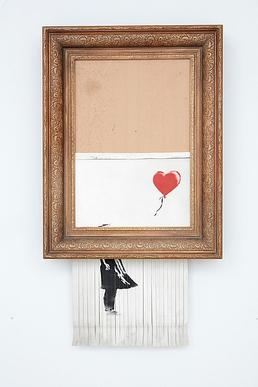

🖌️ Fact Files · Lesson 33
Banksy
Banksy
The Artist Nobody Knows
Hello, detective! 🐾 Today we hunt for the most mysterious artist in the world — then we sort adjectives and adverbs into their families!

🕵️ Photo Detective · Spot the change
Before & after!
Find three differences between the two pictures. What is the same?
💡 The shredded picture got a new name: “Love is in the Bin.” Do you think it is better or worse now? Why?

2Clue Hunt — Answer in full sentences5 questions
Read each question twice, then turn the question around to start your answer!
- 1What is the biggest mystery about Banksy?
- 2In which city did Banksy begin painting on walls?
- 3Why does Banksy often use stencils?
- 4What surprising thing happened to one of Banksy's paintings in 2018?
- 5Think deeper: why do you think Banksy chooses to paint in the streets instead of only in galleries?

⭐ Sections 3 – 4
The Word
The Word
Workshop!
Every describing word belongs to a family. Can you sort them all? 🔍
3Types of Adjectives
4Types of Adverbs · Review

🎒 Homework Missions
- 1Write five sentences, each using a different type of adjective (descriptive, quantity, demonstrative, possessive, proper). Label each one.
- 2Write four sentences about an artist at work, each using a different type of adverb (manner, time, place, frequency).
- 3Find three adjectives in a book you're reading and write what type each one is.
🎟️ Exit ticket · last 3 minutes
Tell me without looking: what type of adjective is “this”? And what question does an adverb of frequency answer?
Coming in Lesson 34
Plurals — the rules for making words mean “more than one,” including tricky ones (mouse → mice!). 🐭